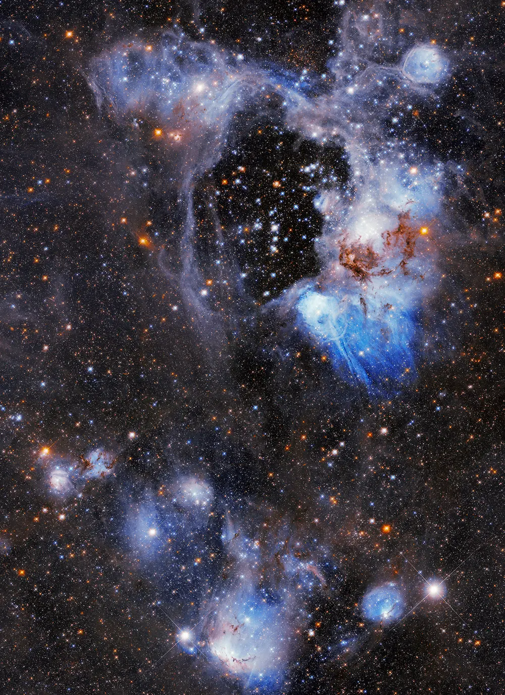
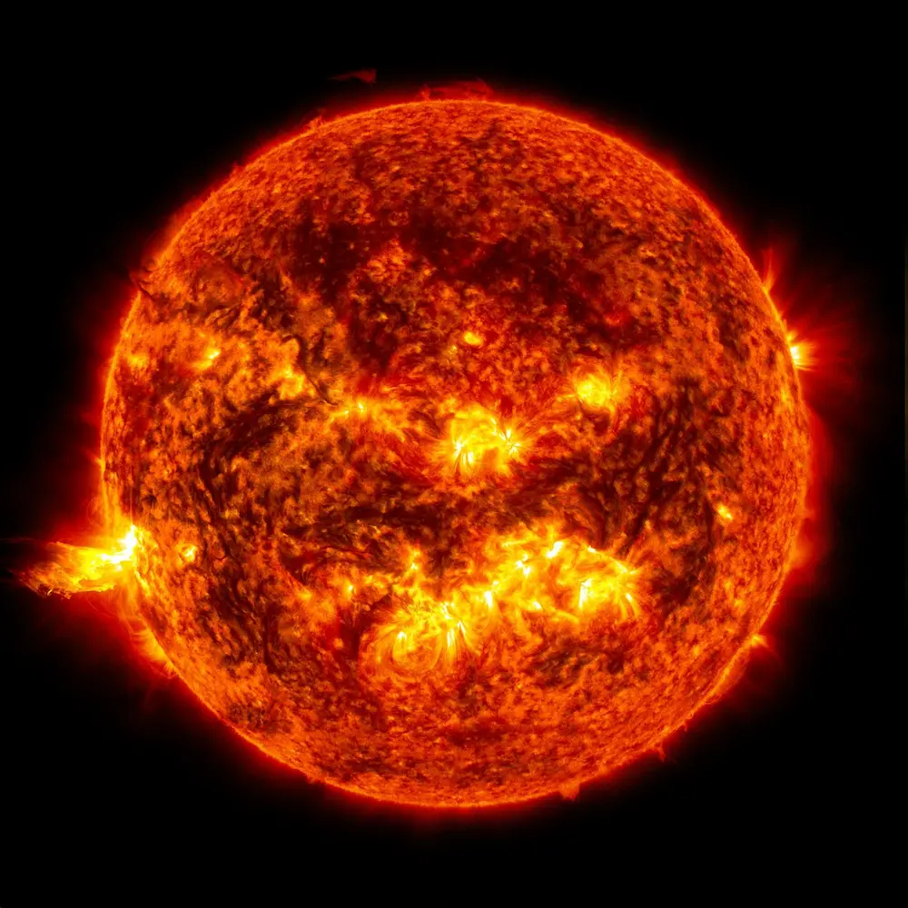
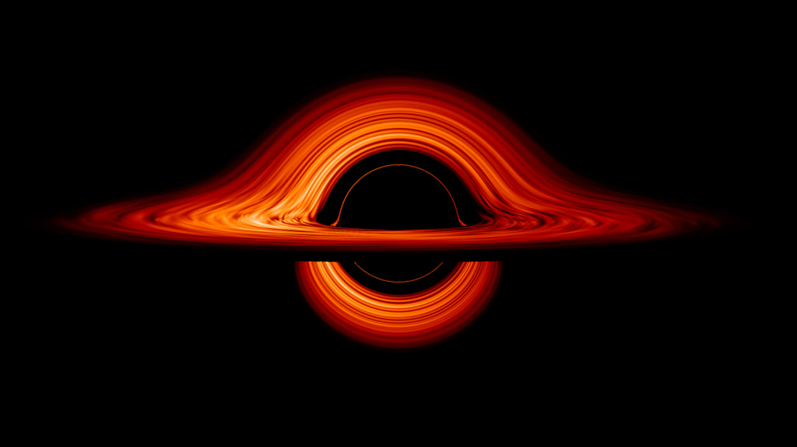
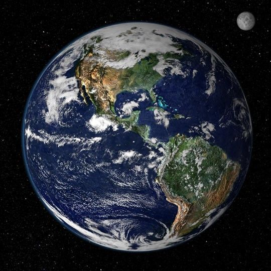

What is out there?
Have you ever looked at the dark sky above us and wondered if it's really this dark everywhere?
The night sky is much bigger than it looks. What we can see with our eyes is only a tiny part of it. Astronomers at NASA study space with telescopes, and they have found that the universe contains billions of galaxies. Each galaxy holds billions of stars, and many of those stars have planets orbiting them. Our own Sun is just one ordinary star in one ordinary galaxy.
So no — space is not empty darkness. It is full of light. Most of it is just too far away, too faint, or invisible to our eyes.
Here we explore some of the wonders of the universe:

The star that keeps us alive,

The strangest object we know of...
